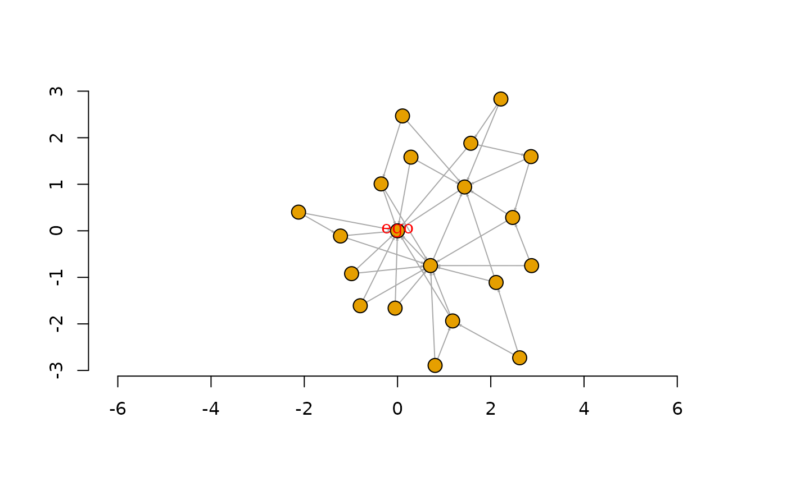

Place vertices on the plane using the force-directed layout algorithm by Fruchterman and Reingold.
Usage
layout_with_fr(
graph,
coords = NULL,
dim = 2,
niter = 500,
start.temp = sqrt(vcount(graph)),
grid = c("auto", "grid", "nogrid"),
weights = NULL,
minx = NULL,
maxx = NULL,
miny = NULL,
maxy = NULL,
minz = NULL,
maxz = NULL,
coolexp = deprecated(),
maxdelta = deprecated(),
area = deprecated(),
repulserad = deprecated(),
maxiter = deprecated()
)
with_fr(...)Arguments
- graph
The graph to lay out. Edge directions are ignored.
- coords
Optional starting positions for the vertices. If this argument is not
NULLthen it should be an appropriate matrix of starting coordinates.- dim
Integer scalar, 2 or 3, the dimension of the layout. Two dimensional layouts are places on a plane, three dimensional ones in the 3d space.
- niter
Integer scalar, the number of iterations to perform.
- start.temp
Real scalar, the start temperature. This is the maximum amount of movement alloved along one axis, within one step, for a vertex. Currently it is decreased linearly to zero during the iteration.
- grid
Character scalar, whether to use the faster, but less accurate grid based implementation of the algorithm. By default (“auto”), the grid-based implementation is used if the graph has more than one thousand vertices.
- weights
A vector giving edge weights. The
weightedge attribute is used by default, if present. If weights are given, then the attraction along the edges will be multiplied by the given edge weights. This places vertices connected with a highly weighted edge closer to each other. Weights must be positive.- minx
If not
NULL, then it must be a numeric vector that gives lower boundaries for the ‘x’ coordinates of the vertices. The length of the vector must match the number of vertices in the graph.- maxx
Similar to
minx, but gives the upper boundaries.- miny
Similar to
minx, but gives the lower boundaries of the ‘y’ coordinates.- maxy
Similar to
minx, but gives the upper boundaries of the ‘y’ coordinates.- minz
Similar to
minx, but gives the lower boundaries of the ‘z’ coordinates.- maxz
Similar to
minx, but gives the upper boundaries of the ‘z’ coordinates.- coolexp, maxdelta, area, repulserad
![[Deprecated]](figures/lifecycle-deprecated.svg) These
arguments are not supported from igraph version 0.8.0 and are ignored
(with a warning).
These
arguments are not supported from igraph version 0.8.0 and are ignored
(with a warning).- maxiter
A deprecated synonym of
niter, for compatibility.- ...
Passed to
layout_with_fr().
Value
A two- or three-column matrix, each row giving the coordinates of a vertex, according to the ids of the vertex ids.
Details
See the referenced paper below for the details of the algorithm.
This function was rewritten from scratch in igraph version 0.8.0.
References
Fruchterman, T.M.J. and Reingold, E.M. (1991). Graph Drawing by Force-directed Placement. Software - Practice and Experience, 21(11):1129-1164.
See also
layout_with_drl(), layout_with_kk() for
other layout algorithms.
Other graph layouts:
add_layout_(),
component_wise(),
layout_(),
layout_as_bipartite(),
layout_as_star(),
layout_as_tree(),
layout_in_circle(),
layout_nicely(),
layout_on_grid(),
layout_on_sphere(),
layout_randomly(),
layout_with_dh(),
layout_with_gem(),
layout_with_graphopt(),
layout_with_kk(),
layout_with_lgl(),
layout_with_mds(),
layout_with_sugiyama(),
merge_coords(),
norm_coords(),
normalize()
Author
Gabor Csardi csardi.gabor@gmail.com
Examples
# Fixing ego
g <- sample_pa(20, m = 2)
minC <- rep(-Inf, vcount(g))
maxC <- rep(Inf, vcount(g))
minC[1] <- maxC[1] <- 0
co <- layout_with_fr(g,
minx = minC, maxx = maxC,
miny = minC, maxy = maxC
)
co[1, ]
#> [1] 0 0
plot(g,
layout = co, vertex.size = 30, edge.arrow.size = 0.2,
vertex.label = c("ego", rep("", vcount(g) - 1)), rescale = FALSE,
xlim = range(co[, 1]), ylim = range(co[, 2]), vertex.label.dist = 0,
vertex.label.color = "red"
)
axis(1)
axis(2)
